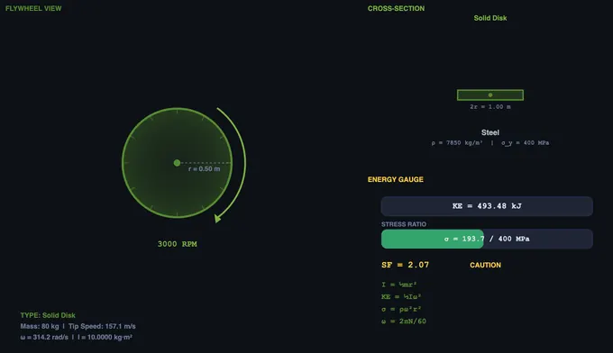
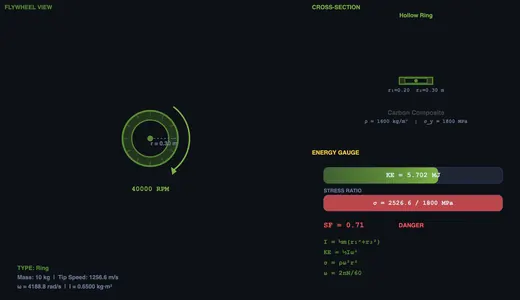
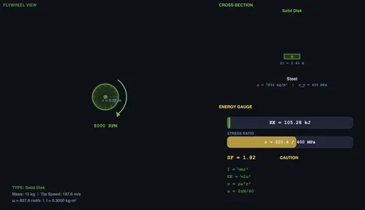

Flywheel Energy Calculator
Kinetic Energy & Moment of Inertia • Hoop Stress • Materials — Simulate • Explore • Practice • Quiz
3D Model — Flywheel Energy Calculator
Interactive 3D model of this apparatus. Pick a component on the right, then drag to rotate · scroll to zoom · right-drag to pan.
1 Overview
The Flywheel Energy Storage Simulator focuses on the physics of rotational inertia and kinetic energy storage in flywheel systems. Unlike the companion Flywheel (turning moment) tool, this simulator emphasises flywheel geometry, material selection, and performance limits including hoop stress and speed variation constraints.
You can compare three flywheel types (solid disk, ring, and spoke) across three materials (steel, aluminium, and carbon composite), calculate energy stored (KE = ½Iω²), evaluate hoop stress safety margins, and explore energy density for modern flywheel applications including grid storage, UPS backup, and regenerative braking.
2 Loading the Mechanism
- Select a Flywheel Type (Solid Disk, Ring, or Spoke) to change the geometry and moment of inertia formula.
- Choose a Material (Steel, Aluminium, or Carbon Composite) to set density and strength limits.
- Adjust Mass, Outer Radius, Inner Radius (for ring/spoke types), and RPM.
- Load presets: Industrial Steel, Automotive, High-Speed Composite, or UPS Backup.
- The canvas shows an animated rotating flywheel with real-time energy gauge and cross-section view.
3 Watching the Motion
Readout cards display moment of inertia (I), angular velocity (ω), kinetic energy (J and kWh), maximum hoop stress (MPa), energy density (Wh/kg), tip speed (m/s), and safety factor against burst. The safety factor compares hoop stress to the material's ultimate tensile strength — values below 2.0 are flagged as dangerous.
For a solid disk, I = ½mr². For a ring, I = ½m(r1² + r2²). Ring-type flywheels concentrate mass at the rim for higher I per unit mass. The maximum speed is limited by hoop stress σ = ρω²r².
4 Geometry & Theory
Study 10 concepts across Basics, Design, and Performance categories covering kinetic energy, moment of inertia for different geometries, angular momentum, hoop stress limits, material selection, energy density comparison, and modern flywheel applications.
5 Try a Problem
Practice generates problems on kinetic energy, moment of inertia, hoop stress, tip speed, energy density, and safety factor calculations. Quiz provides 5 randomised questions from a pool of 15.
6 Design Notes
- Carbon composite flywheels can spin much faster than steel due to their superior strength-to-density ratio — compare materials at the same RPM to see the safety factor difference.
- A ring flywheel has nearly twice the moment of inertia of a solid disk for the same mass and outer radius.
- Energy scales with ω² — doubling the RPM quadruples the stored energy.
- Watch the hoop stress as you increase RPM — there is always a physical limit beyond which the flywheel will burst.
- Compare the energy density (Wh/kg) across materials to understand why advanced composites are used in modern flywheel energy storage systems.
Flywheel Energy Storage — Kinetic Energy and Rotational Dynamics

A counter-intuitive fact I make students prove on paper: at the same rim speed (the limit set by hoop stress), all flywheels of the same shape store the same energy per kilogram. Spinning steel and spinning carbon fibre arrive at exactly the same kJ/kg if you push them to their stress limit. What changes is how much absolute energy you can pack into one device — carbon spins much faster before bursting, so it wins on energy density even though the per-kg math is identical.
Flywheel energy storage systems store energy in the form of rotational kinetic energy by spinning a massive rotor (flywheel) at high angular velocities. This technology has been used for centuries — from potter's wheels to modern grid-scale energy storage, uninterruptible power supplies (UPS), and regenerative braking in hybrid vehicles. The key advantage of flywheel storage is its ability to absorb and release energy very quickly, making it ideal for high-power, short-duration applications.
A flywheel stores energy according to the equation KE = ½Iω², where I is the moment of inertia and ω is the angular velocity. To maximise stored energy, engineers either increase the mass and radius (increasing I) or spin the flywheel faster (increasing ω). Since energy scales with the square of angular velocity, high-speed flywheels using advanced composite materials can achieve remarkable energy densities.
Moment of Inertia and Flywheel Types
The moment of inertia depends on the mass distribution relative to the axis of rotation. For a solid disk, I = ½mr². For a thin ring or hollow cylinder, I = ½m(r&sub1;² + r&sub2;²), where r&sub1; and r&sub2; are the inner and outer radii. Ring-type flywheels concentrate mass at the rim, giving a higher moment of inertia per unit mass — this is why most high-performance flywheels use a ring or rim design.


Materials and Stress Limits
The maximum rotational speed of a flywheel is limited by the hoop stress σ = ρω²r², where ρ is the material density. Steel flywheels are limited to tip speeds of about 200–300 m/s, while carbon fibre composite flywheels can exceed 1000 m/s due to their superior strength-to-density ratio. Common materials include steel (ρ ≈ 7850 kg/m³, σ_yield ≈ 250–600 MPa), aluminium (ρ ≈ 2700 kg/m³, σ_yield ≈ 270 MPa), and carbon fibre composites (ρ ≈ 1600 kg/m³, σ_tensile ≈ 1500–2500 MPa).
How to Use This Simulator
In Simulate mode, select a flywheel type (Solid Disk, Ring, or Spoke), choose a material, then adjust mass, radii, and RPM using the sliders. The canvas shows an animated rotating flywheel with real-time energy gauge and cross-section. Readout cards display moment of inertia, kinetic energy, angular velocity, hoop stress, energy density, tip speed, and safety factor. Switch to Explore mode to study 10 concepts across Basics, Design, and Performance. Practice mode generates random flywheel problems, and Quiz tests your knowledge with 5 randomised questions.
Who Uses This Simulator?
This simulator is designed for mechanical engineering students, energy systems trainees, dynamics and machine design students, and instructors teaching rotational energy storage, flywheel design, and material selection for high-speed rotating machinery.
Explore Related Simulators
If you found this Flywheel Energy Storage simulator helpful, explore our Flywheel simulator, Thermodynamics simulator, Slider-Crank simulator, and Torque & Rotation simulator for more hands-on practice.